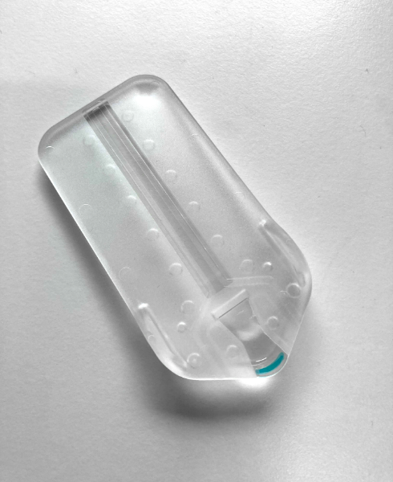
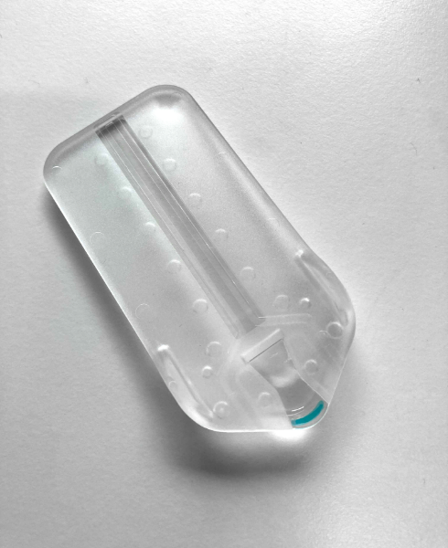

The project was structured having patients at the heart of the development process. We followed a medical device development approach and started by conducting collaborative sessions to understand the current state of cancer treatment, identify challenges and highlight opportunities.
Co-Design Studies
We structured the discovery phase to be a collaborative process between every stakeholder involved.
The research sessions and focus groups were designed in a way that allowed each stakeholder to bring their own view and experience on what the challenges were. We ran mixed sessions were doctors would seat next to patients and nurses and other independent sessions with each stakeholder. These sessions were conducted at partner hospitals across London and included cancer patients, carers, nurses, doctors and consultants.
 
